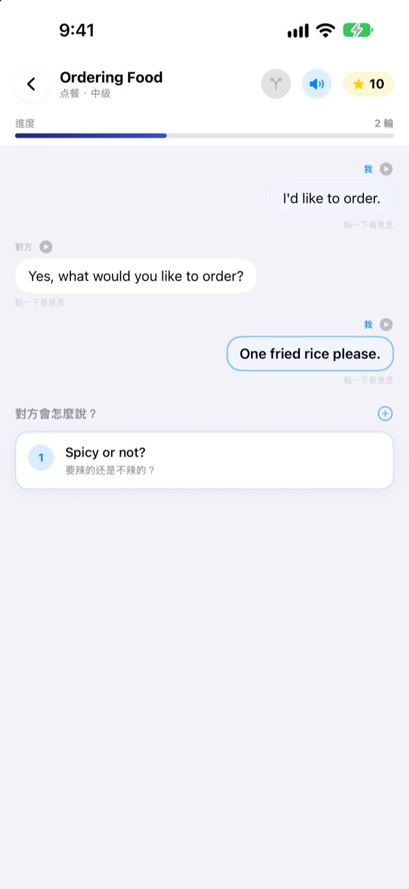
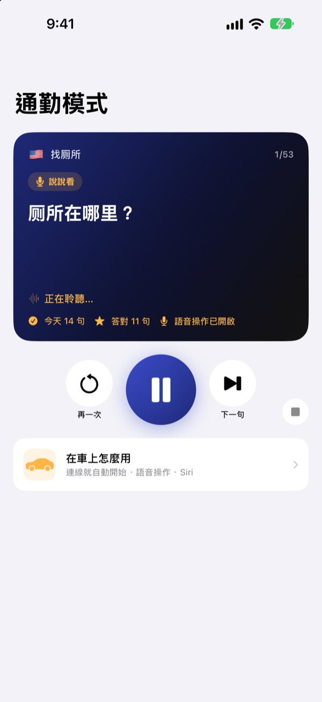
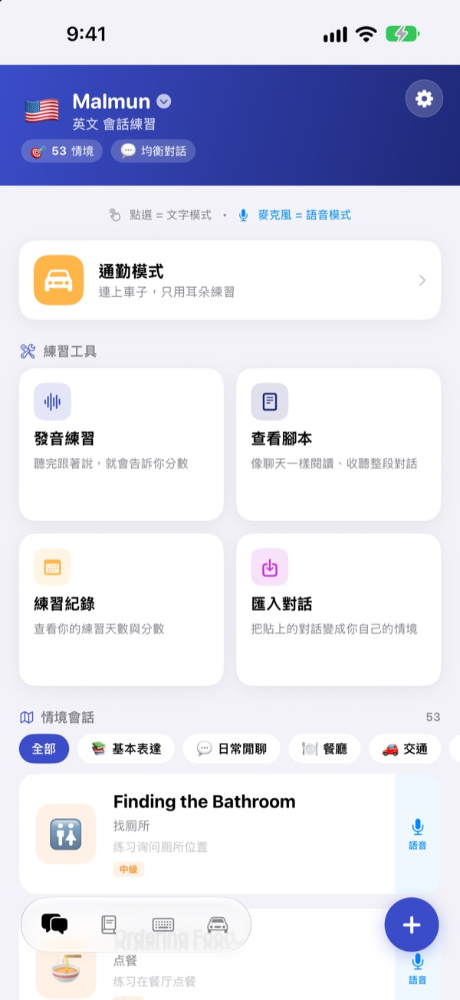
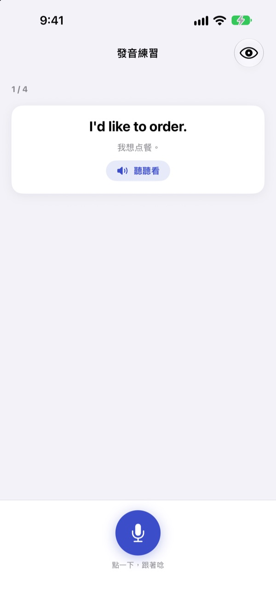

別再卡住，
這次換你先開口
Malmun 是一款口說練習 App，你選的每個回答都會讓對話走向不同的方向。從英語、韓語、日語、西班牙語和印尼語中挑一種來學，開車通勤時不必看螢幕，只靠耳朵和聲音就能練習。
分支對話、發音練習和單字表都能免費使用。

親手把對話接下去
這是 App 裡的印尼語對話「早安問候」。每選一句，對話就會轉往另一條路。
句子背好了，輪到回答卻說不出口？
課本裡的對話總是照劇本走，但現實中的對方常會冒出你沒料到的話。Malmun 讓你先把一段對話的每條分支都走過一遍，不管對方怎麼接，你都能把下一句說出來。連雙手沒空的通勤路上，也能變成練習時間。
邊開車邊用耳朵練
通勤模式透過藍牙或 CarPlay 從車上的喇叭播放。先聽意思，提示音響起後留時間讓你自己說，最後正確答案先慢速播一次，再用正常速度播一次。
用方向盤按鍵切換和重聽，輪到你時也可以直接說下一個、再來、慢一點。導航語音出現時會先暫停。

旅行和生活的場景全都有
每種語言都有 53 段情境會話，從基本表達、日常閒聊，到餐廳、交通、機場、飯店、購物、觀光和緊急狀況。
學印尼語的話還有更多：5 段原創閒聊、3 堂各 6 個場景的一日課程和每週課表，以及出差馬上用得到的 100 個單字。

說得對不對，馬上知道
發音練習會給你分數，並用顏色標出說對的字和漏掉的字。
在腳本檢視裡，整段對話像聊天紀錄一樣攤開，可以一路聽完，也可以遮住意思考考自己。

三個步驟就能開始
- 1
選擇要學的語言
點主畫面最上方的國旗就能切換。我的句子和單字表會依語言分開儲存。
- 2
打開一段對話
點選回答是文字模式；點麥克風開口說，就是會自動找出最接近回答的語音模式。
- 3
開車時用通勤模式
把手機連上車，按下播放就好，不用看螢幕。
通勤模式的操作
- 方向盤：下一首
- 下一句
- 方向盤：上一首
- 同一句再聽一次
- 播放鍵
- 暫停、繼續
下一個·下一句- 下一句
再來·重複- 再聽一次
慢一點·快一點- 調整朗讀速度
下一個場景- 進到下一段對話
暫停·停止- 停止練習
- 對 Siri 說「在 Malmun 開始通勤練習」
- 不碰手機就開始
語音指令只在提示音之後、輪到你說的時候才會聽。句子說對了會提示「很棒！」。目前的句子會顯示在車上螢幕的播放資訊裡，CarPlay 沒有另外的 App 畫面。
幾乎全部免費，想練更多就用 Malmun Pro
免費
- 分支閒聊和一日課程（印尼語）
- 情境會話的基本表達和日常閒聊
- 通勤模式每天 3 個場景
- 發音練習、腳本檢視、匯入對話、練習紀錄
- 我的句子、單字卡、句子鍵盤
- 和朋友分享情境、用 AI 產生情境
Malmun Pro
- 全部情境會話：餐廳、交通、機場、飯店、購物、觀光、緊急狀況
- 通勤模式不限次數
- 所有語言通用
年度訂閱，或一次買斷終身使用
價格請在 App 內或 App Store 查看。年度訂閱若未在當期結束前至少 24 小時取消，將自動續訂。
常見問題
在車上怎麼用？
用藍牙或 CarPlay 把 iPhone 連到車上，打開通勤模式，按下播放。聲音會從車上喇叭播出，目前的句子顯示在「正在播放」。也可以對 Siri 說「在 Malmun 開始通勤練習」；或在捷徑 App ▸ 自動化設定一次，連上 CarPlay（或車上藍牙）時執行「開始通勤練習」，一上車就會開始。
麥克風會一直在聽嗎？
不會。只有在提示音之後、輪到你說的時候才用手機麥克風聽，聽到的內容只在裝置上處理。
可以學哪些語言？句子的意思用什麼語言顯示？
可以學英語、韓語、日語、西班牙語和印尼語。App 的按鈕和選單是繁體中文，但句子的意思和語音指令是以簡體中文為準，所以中文本身不會出現在可選的學習語言裡。
發音一直辨識不準。
語音辨識是用你正在學的語言運作。請換到安靜一點的地方，並確認裝置上已下載該語言的語音辨識。
怎麼加入鍵盤？
前往 設定 ▸ 一般 ▸ 鍵盤 ▸ 鍵盤 ▸ 新增鍵盤，選擇 Malmun 鍵盤。打字時點地球鍵就能切換，不需要開啟「允許完整取用」。要顯示哪些句子，可以在主畫面右下角的鍵盤圖示 ▸ 管理鍵盤裡逐一開關。
看不到朋友分享的情境。
和朋友分享是透過 iCloud 運作，兩個人都要登入 iCloud。如果還是看不到，請完全關閉 App 後再重新打開。
用 AI 產生情境需要什麼？
在 App 裡填入你自己的 Anthropic API 金鑰，再寫一個主題，就會產生新的對話。沒有金鑰也能使用其他所有功能。
怎麼取消訂閱或申請退款？
付款由 Apple 處理。取消請到 iPhone 設定 ▸ Apple 帳號 ▸ 訂閱項目 ▸ Malmun。退款請到 reportaproblem.apple.com 向 Apple 申請。
換了手機，Pro 不見了。
用同一個 Apple 帳號登入後，在 Malmun 點 設定 ▸ Malmun Pro ▸ 回復購買項目。
我的學習紀錄存在哪裡？
不需要帳號。學習紀錄只存在你的裝置和你自己的 iCloud，沒有廣告，也不追蹤。只會傳送改善 App 用的匿名使用統計和錯誤診斷。問題或功能建議也可以到 GitHub Issues（github.com/M1zz/IndonesianSmallTalk/issues）留言。
有任何問題或建議，請寄信到 leeo@kakao.com。也可以在 App 的 設定 ▸ 傳送意見回饋，或 Instagram @lee25_ios 聯絡我們。